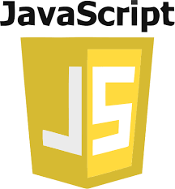
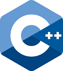

1.Python

Python is an interpreted, high-level and general-purpose programming language. Created by Guido van Rossum and first released in 1991, Python's design philosophy emphasizes code readability with its notable use of significant whitespace. Its language constructs and object-oriented approach aim to help programmers write clear, logical code for small and large-scale projects.
Python is dynamically typed and garbage-collected. It supports multiple programming paradigms, including structured (particularly, procedural), object-oriented, and functional programming. Python is often described as a "batteries included" language due to its comprehensive standard library.
2.Javasript

JavaScript often abbreviated as JS, is a programming language that conforms to the ECMAScript specification. JavaScript is high-level, often just-in-time compiled, and multi-paradigm. It has curly-bracket syntax, dynamic typing, prototype-based object-orientation, and first-class functions.
Alongside HTML and CSS, JavaScript is one of the core technologies of the World Wide Web. JavaScript enables interactive web pages and is an essential part of web applications. The vast majority of websites use it for client-side page behavior, and all major web browsers have a dedicated JavaScript engine to execute it.
As a multi-paradigm language, JavaScript supports event-driven, functional, and imperative programming styles. It has application programming interfaces (APIs) for working with text, dates, regular expressions, standard data structures, and the Document Object Model (DOM). However, the language itself does not include any input/output (I/O), such as networking, storage, or graphics facilities, as the host environment (usually a web browser) provides those APIs.
JavaScript engines were originally used only in web browsers, but they are now embedded in some servers, usually via Node.js. They are also embedded in a variety of applications created with frameworks such as Electron and Cordova.
Although there are similarities between JavaScript and Java, including language name, syntax, and respective standard libraries, the two languages are distinct and differ greatly in design.
3.Java

Java was originally developed by James Gosling at Sun Microsystems (which has since been acquired by Oracle) and released in 1995 as a core component of Sun Microsystems' Java platform
Java is a class-based, object-oriented programming language that is designed to have as few implementation dependencies as possible. It is a general-purpose programming language intended to let application developers write once, run anywhere (WORA),meaning that compiled Java code can run on all platforms that support Java without the need for recompilation. Java applications are typically compiled to bytecode that can run on any Java virtual machine (JVM) regardless of the underlying computer architecture. The syntax of Java is similar to C and C++, but has fewer low-level facilities than either of them. The Java runtime provides dynamic capabilities (such as reflection and runtime code modification) that are typically not available in traditional compiled languages. As of 2019, Java was one of the most popular programming languages in use according to GitHub, particularly for client-server web applications, with a reported 9 million developers.
4.Kotlin

Kotlin is a cross-platform, statically typed, general-purpose programming language with type inference. Kotlin is designed to interoperate fully with Java, and the JVM version of Kotlin's standard library depends on the Java Class Library, but type inference allows its syntax to be more concise. Kotlin mainly targets the JVM, but also compiles to JavaScript (for e.g. frontend web applications using React or native code (via LLVM), e.g. for native iOS apps sharing business logic with Android apps. Language development costs are borne by JetBrains, while the Kotlin Foundation protects the Kotlin trademark.
On 7 May 2019, Google announced that the Kotlin programming language is now its preferred language for Android app developers. Since the release of Android Studio 3.0 in October 2017, Kotlin has been included as an alternative to the standard Java compiler. The Android Kotlin compiler targets Java 6 by default, but lets the programmer choose to target Java 8 up to 13, for optimization, or more features.
5.Swift

Swift is a general-purpose, multi-paradigm, compiled programming language developed by Apple Inc. and the open-source community, first released in 2014. Swift was developed as a replacement for Apple's earlier programming language Objective-C, as Objective-C had been largely unchanged since the early 1980s and lacked modern language features. Swift works with Apple's Cocoa and Cocoa Touch frameworks, and a key aspect of Swift's design was the ability to interoperate with the huge body of existing Objective-C code developed for Apple products over the previous decades. It is built with the open source LLVM compiler framework and has been included in Xcode since version 6, released in 2014. On Apple platforms, it uses the Objective-C runtime library which allows C, Objective-C, C++ and Swift code to run within one program.
Apple intended Swift to support many core concepts associated with Objective-C, notably dynamic dispatch, widespread late binding, extensible programming and similar features, but in a "safer" way, making it easier to catch software bugs; Swift has features addressing some common programming errors like null pointer dereferencing and provides syntactic sugar to help avoid the pyramid of doom. Swift supports the concept of protocol extensibility, an extensibility system that can be applied to types, structs and classes, which Apple promotes as a real change in programming paradigms they term "protocol-oriented programming
6.R

R is a programming language and free software environment for statistical computing and graphics supported by the R Foundation for Statistical Computing.The R language is widely used among statisticians and data miners for developing statistical software and data analysis. Polls, data mining surveys, and studies of scholarly literature databases show substantial increases in popularity;as of September 2020, R ranks 9th in the TIOBE index, a measure of popularity of programming languages.
A GNU package, the official R software environment is written primarily in C, Fortran, and R itself] (thus, it is partially self-hosting) and is freely available under the GNU General Public License. Pre-compiled executables are provided for various operating systems. Although R has a command line interface, there are several third-party graphical user interfaces, such as RStudio, an integrated development environment, and Jupyter, a notebook interface.
7.PHP

PHP is a general-purpose scripting language especially suited to web development. It was originally created by Danish-Canadian programmer Rasmus Lerdorf in 1994.The PHP reference implementation is now produced by The PHP Group.PHP originally stood for Personal Home Page,[7] but it now stands for the recursive initialism PHP: Hypertext Preprocessor.
PHP code is usually processed on a web server by a PHP interpreter implemented as a module, a daemon or as a Common Gateway Interface (CGI) executable. On a web server, the result of the interpreted and executed PHP code – which may be any type of data, such as generated HTML or binary image data – would form the whole or part of an HTTP response. Various web template systems, web content management systems, and web frameworks exist which can be employed to orchestrate or facilitate the generation of that response. Additionally, PHP can be used for many programming tasks outside of the web context, such as standalon.e graphical applications[10] and robotic drone control.Arbitrary PHP code can also be interpreted and executed via command-line interface (CLI).
The standard PHP interpreter, powered by the Zend Engine, is free software released under the PHP License. PHP has been widely ported and can be deployed on most web servers on almost every operating system and platform, free of charge.[12]
The PHP language evolved without a written formal specification or standard until 2014, with the original implementation acting as the de facto standard which other implementations aimed to follow. Since 2014, work has gone on to create a formal PHP specification.
By September 2020, two out of every three websites using PHP are still on discontinued PHP versions,and almost half of all PHP websites use version 5.6 or older, that not even Debian supports (while Debian 9 still supports version 7.0 and 7.1, those versions are unsupported by The PHP Development Team).[16] In addition, PHP version 7.2, the most popular supported PHP version, will stop getting security updates on November 30, 2020 and therefore unless PHP websites are upgraded to version 7.3 (or newer), 84% of PHP websites will thus use discontinued versions.
8.C#

C++ is a general-purpose programming language created by Bjarne Stroustrup as an extension of the C programming language, or "C with Classes". The language has expanded significantly over time, and modern C++ now has object-oriented, generic, and functional features in addition to facilities for low-level memory manipulation. It is almost always implemented as a compiled language, and many vendors provide C++ compilers, including the Free Software Foundation, LLVM, Microsoft, Intel, Oracle, and IBM, so it is available on many platforms.
C++ was designed with a bias toward system programming and embedded, resource-constrained software and large systems, with performance, efficiency, and flexibility of use as its design highlights. C++ has also been found useful in many other contexts, with key strengths being software infrastructure and resource-constrained applications, including desktop applications, video games, servers (e.g. e-commerce, Web search, or SQL servers), and performance-critical applications (e.g. telephone switches or space probes).
9.C++

C++ is a general-purpose programming language created by Bjarne Stroustrup as an extension of the C programming language, or "C with Classes". The language has expanded significantly over time, and modern C++ now has object-oriented, generic, and functional features in addition to facilities for low-level memory manipulation. It is almost always implemented as a compiled language, and many vendors provide C++ compilers, including the Free Software Foundation, LLVM, Microsoft, Intel, Oracle, and IBM, so it is available on many platforms.
C++ was designed with a bias toward system programming and embedded, resource-constrained software and large systems, with performance, efficiency, and flexibility of use as its design highlights. C++ has also been found useful in many other contexts, with key strengths being software infrastructure and resource-constrained applications, including desktop applications, video games, servers (e.g. e-commerce, Web search, or SQL servers), and performance-critical applications (e.g. telephone switches or space probes).
10.C
C created by dennis richet in 1972 is a general-purpose, procedural computer programming language supporting structured programming, lexical variable scope, and recursion, with a static type system. By design, C provides constructs that map efficiently to typical machine instructions. It has found lasting use in applications previously coded in assembly language. Such applications include operating systems and various application software for computer architectures that range from supercomputers to PLCs and embedded systems.
A successor to the programming language B, C was originally developed at Bell Labs by Dennis Ritchie between 1972 and 1973 to construct utilities running on Unix. It was applied to re-implementing the kernel of the Unix operating system.[6] During the 1980s, C gradually gained popularity. It has become one of the most widely used programming languages,[7][8] with C compilers from various vendors available for the majority of existing computer architectures and operating systems. C has been standardized by the ANSI since 1989 (ANSI C) and by the International Organization for Standardization (ISO). As of September 2020, C is the most popular programming language.[9]
C is an imperative procedural language. It was designed to be compiled to provide low-level access to memory and language constructs that map efficiently to machine instructions, all with minimal runtime support. Despite its low-level capabilities, the language was designed to encourage cross-platform programming. A standards-compliant C program written with portability in mind can be compiled for a wide variety of computer platforms and operating systems with few changes to its source code.